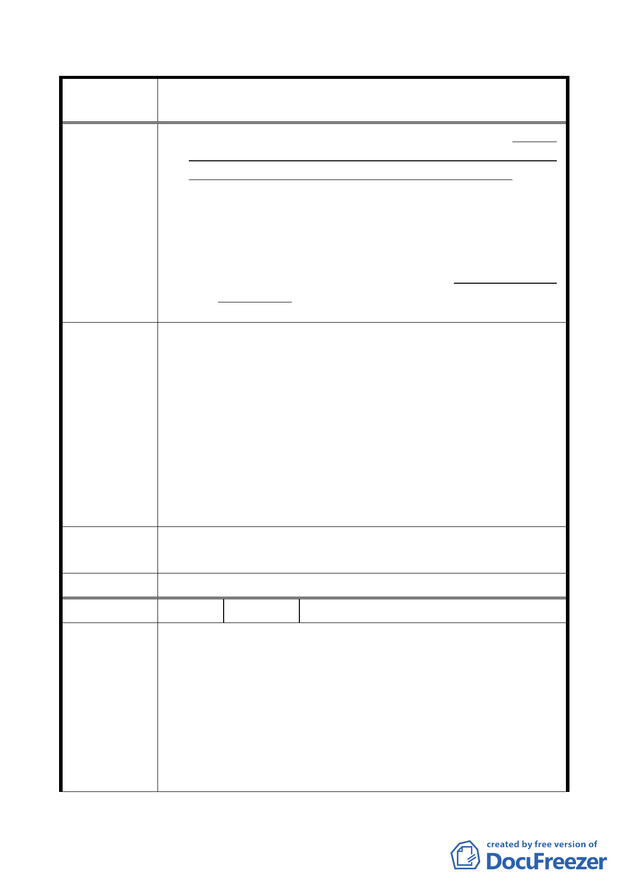

修訂本市都市計畫「臺北市山坡地開發建築要點」為「臺北市
案 名 都市計畫劃定山坡地開發建築管制規定」案
地面積檢討建蔽率與容積率，但得計入開發範圍；原自然
地形平均坡度超過百分之三十且未逾百分之五十五者，得
作為法定空地或開放空間使用，不得配置建築物。…。
二、修正條文第六條第二項請增加：
前項申請開發面積不足二公頃，且符合第一條規定者，免
申請開發許可。
三、修正條文第七條修改增加劃線之文字如下：
七、山坡地開發建築於取得開發許可後，或依第六條免申
請開發許可，申請者應依…，始得動工。
一、依本府加強山坡地安全管理之既定政策，不宜放寬開發強
度，避免衝擊山坡地環境安全。
二、目前本市適用山開要點地區開發案件，不論開發規模大小，
市府回應
說明
皆須依「臺北市都市設計及土地使用開發許可審議委員會
設置辦法」提請本市都市設計及土地使用開發許可審議委
員會(以下簡稱「委員會」)審議，由委員會受理開發許可
審議。為免申請者誤解規模不足 2 公頃者毋須提送委員會
審議，故刪除現行要點第 7 條第 2 項「申請開發面積不足
2 公頃，且符合第 3 條規定者，免申請開發許可」之規定。
專案小組
同「市府回應說明」。
審查意見
委 員 會 決 議 同「專案小組審查意見」。
編
號 5 陳情人
台北市建築開發商業同業公會
一、依據鈞府 101 年 3 月 14 日府都築字第 1013015500 號公告
及本會會員反映意見辦理。
二、建請保留現行條文第七條（修正草案移列第六條）第二項，
陳情理由
就符合現行條文第三條規定情形者，維持現行作業方式，
免申請開發許可。理由說明如下：
（一）現行條文第三條考量部分山坡地範圍「總面積或剩餘
未開發面積不足 2 萬平方公尺者」、「完整都市計畫
街廓內適用本要點之山坡地整體開發使用者」、「臨
- 18 -